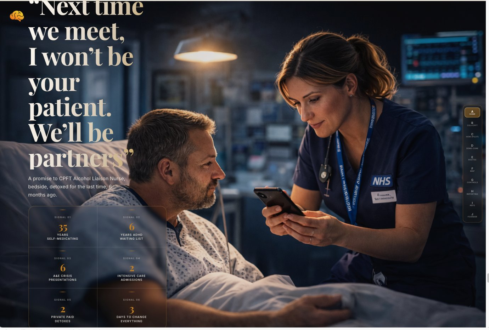
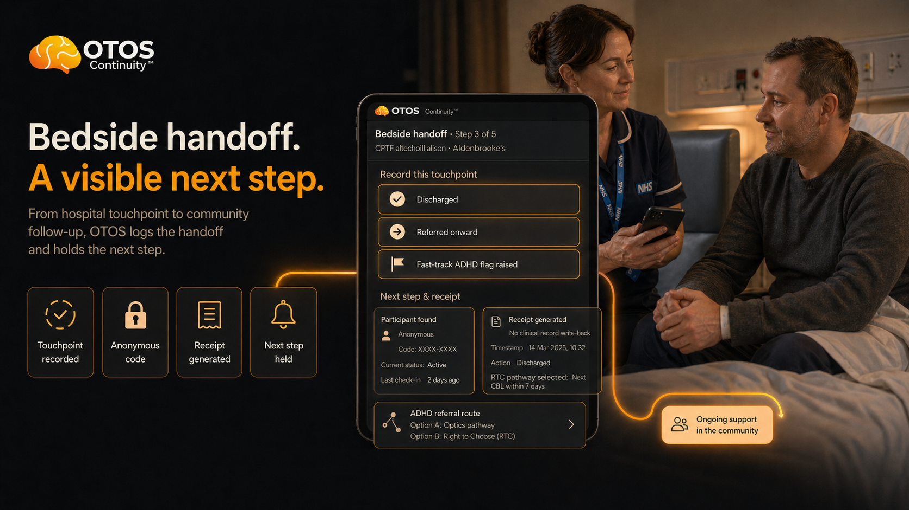

Named contact
One person in Alcohol Care
A named contact who can answer workflow questions, confirm local red lines and help shape the handoff protocol. Not a project lead. Not a new role. One name.
After my private psychiatrist said I needed a medically supervised detox, I tried twice to get admitted through A&E and was turned away. On the third attempt, I told the psychiatric nurse the truth: I was not there to avoid responsibility — I was there to detox safely, engage with CGL, and get stable enough to start ADHD medication. She believed me and admitted me.
The Alcohol Liaison Nurse came later, after detox. By then the gap was clear: I could be signposted to CGL or mental health support but there was no single route for addiction and ADHD together. She had nowhere else to send me, so she helped make sure the discharge letter gave my private psychiatrist what he needed. Within three days of Elvanse, my whole life made sense. This is me keeping that bedside promise.

I've been briefed on OTOS Continuity™ — a non-clinical handoff layer for adults with co-occurring ADHD and addiction in the Cambridge and Peterborough area. I understand it is not a clinical service and does not access or write to any EPR. I'd like to explore whether there is a role for Addenbrooke's Alcohol Care in the scoping conversation for a 12-week pre-pilot.
Edit as you see fit. Two minutes to send. No commitment beyond the note.
Low integration. Low disruption. High clarity. No clinical record access, no diagnosis, no prescribing, no automated clinical decisions, no change to existing workflows.
The last time I was at Addenbrooke's as a patient, my alcohol liaison nurse sat bedside and told me she had no onward pathway to offer. She was brilliant. She cared. But the system had nothing left to give her to give to me.
So I gave her my words. I told her what I needed the discharge letter to say — and she wrote it exactly as I asked, so I could use it to get back to my private psychiatrist and finally get onto Elvanse.

Within three days, everything changed. The chaos, the addiction, the shame, the repeated hospitalisations — they weren't failures. They were what happens when the underlying neurological condition stays unresolved and the system treats only what arrives first.
I told her: "Next time we meet, I won't be your patient. I'll be your partner." This is that next meeting.
Nobody disappears quietly. They disappear through missed handoffs, discharge gaps and waiting lists that nobody can see in one place.

Private diagnosis. Private medication. The NHS system had the same information. The intervention that changed everything was available on the NHS. Nobody connected the dots.
A named contact who can answer workflow questions, confirm local red lines and help shape the handoff protocol. Not a project lead. Not a new role. One name.
When a patient is discharged who meets the ADHD + addiction profile, the next step is logged and visible — before they walk out the door, not after they disengage.
We map the pathway, agree the boundaries, and design the safest route in. No commitment required beyond that conversation.
One note. One conversation. That is all it takes to start.